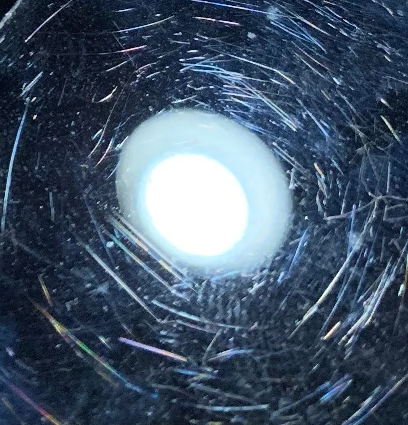
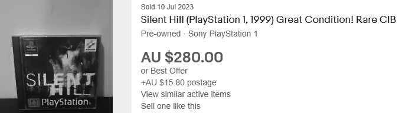
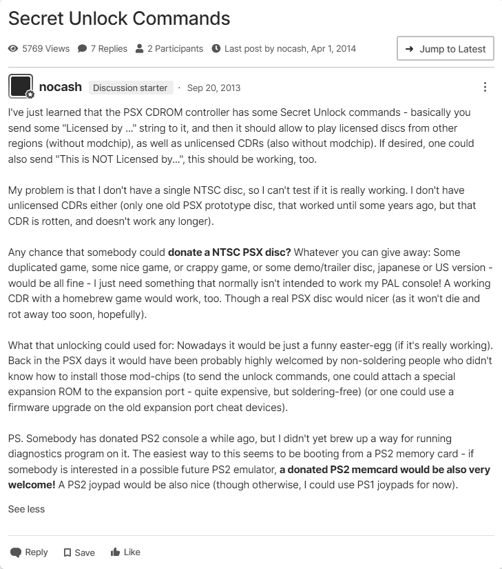

When it comes to disc-based media, it only takes one neglectful owner or a single mishap to scratch or damage a disc beyond repair or to the point, even a healthy laser will struggle to read it properly.  On top of this, the laser will have to work harder to read the disc, which will cause it to wear out faster. Furthermore, with diehard collectors driving up prices to insane levels, it's not always a feasible option to purchase a second-hand title for the system if you simply want to play it. Price up 'Gaia Seed: Project Trap' for example!  The negative stigma of piracy doesn't really apply to these old systems. The developers have made their money, and the publishers have moved on to the next big thing. By purchasing legitimate copies, you're only lining the pockets of the reseller, not the original creators. You have nothing to lose if you really want to play a classic title burnt onto a CD-R. To keep the page from blowing out in size, I will try and cover this section as briefly as possible. You can always contact me if you have any questions. Despite what you may see on the internet, you do not need to burn a disc at 1x or 2x. A lot of newer external drives will have a 16x minimum and this will be fine. What's more important is the quality of the CD-R, and even though CD-R media these days is not absolutely ideal coming in a 700MB capacity instead of 650MB, you should still have good results if you choose carefully. Sometimes if you switch brands, you may have to adjust the laser potentiometer to get the best results. Unfortunately, It's out of scope on this page.
If you are certain your laser is up to the task, and you are comfortable with possibly having to tweak the laser pot and clean the laser lens, I can preflash modchips for you.
Just let me know whether you want a Mayumi V4, MultiMode 3 (MM3), or OneChip. Otherwise, I can also sell you a
which is my own 100% stealth modchip, based on PSNEE V7. This suits all revisions of PAL and NTSC consoles but will not do the JP unlocks. Please do your research before purchasing.
Please enter the choice of modchip, along with the region required (SCEE, SCEA, SCEI). If you are unsure, please contact me first.
If you want to flash your own, I've shared a small pack here containing the hex files. You'll need a programmer for the PIC chip, and the software to perform the flashing. You would generally use a 12C508 or 12C509 series PIC chip.
Martin Korth, known as "NO$" (pronounced 'no cash'), is the author of the NO$PSX emulator. He has also written a few other emulators for other systems. He discovered a set of hidden commands back in 2013.

With this discovery came the ability to boot backups and imports without the need for a modchip. The trade-offs are that every single game featuring an anti-piracy mechanism requires its own set of coding to bypass it. There are frequent updates and patches to fix games, and sometimes the patches break other games that worked in prior versions. For the most part, the compatibility lists are quite good. The other trade-off is that you don't get the iconic startup sounds and animations.
There are currently 2 routes you could take:
and
Unirom is aimed more towards developers and comes with a lot more tools and features. I won't delve into that here. Tonyhax is directly aimed at simply loading backups and imports.
For models featuring the rear parallel port (SCPH-1xxx, SCPH-5xxx, SCPH-7xxx), the best route is to flash a cheat cartridge. This allows the exploit to boot instantly on power-up. If you use
,
you can have the disc in the tray booted automatically with no intervention upon the exploit loading.
Option 2 is the use of the
loaded onto a memory card. This will load by leaving the disc tray open and entering the memory card manager in the system menu with the card inserted in the appropriate slot.
Option 3 was antiquated shortly after release. You can still use this option though. It uses a
by launching cleverly modified save files for certain titles. By loading the genuine disc of these titles, then loading the hacked save files in the game, you can trigger the exploit.
If you are after a flashed cheat cartridge or memory card for any of the above-mentioned, please contact me. I am not charging for the software; it's open source. The cost
is simply for the card or cheat cartridge and the time to flash it, package it, and send it off.